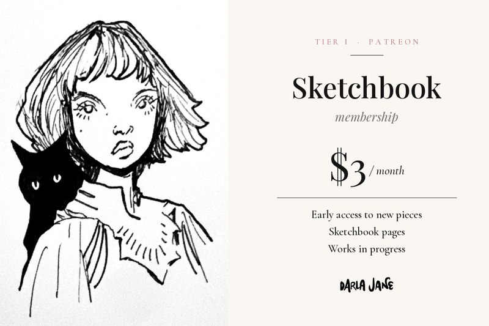
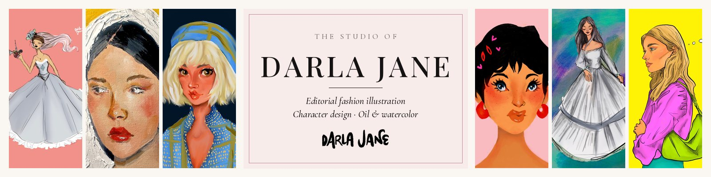
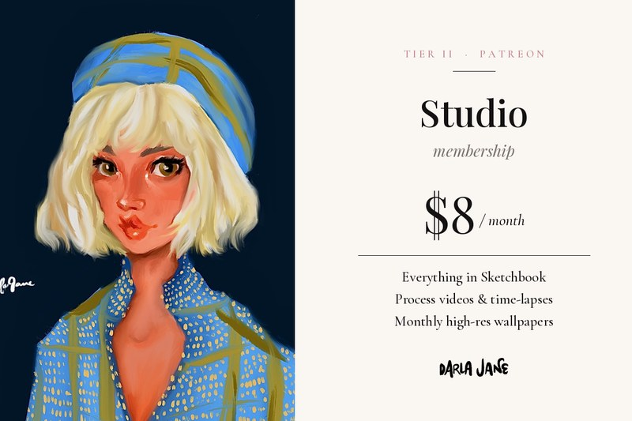
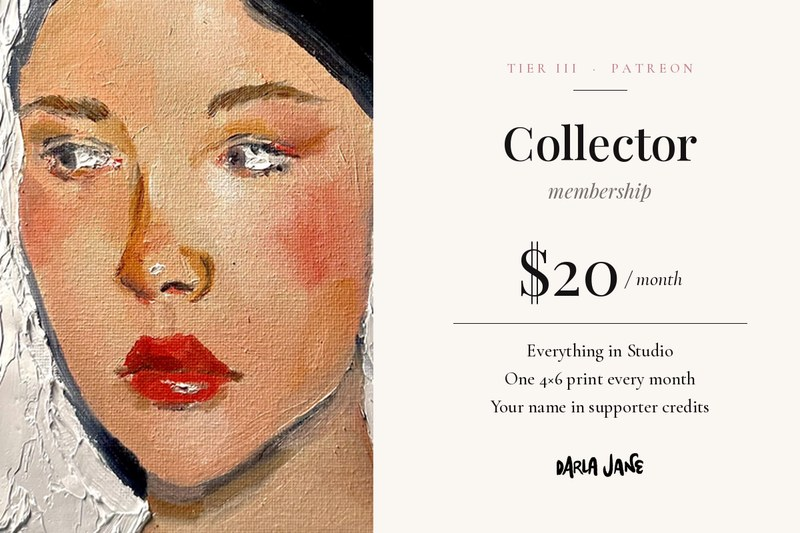

Sketchbook
$3 / month
Early access to new pieces, sketchbook pages, and works in progress.
Join Sketchbook
Illustration

Patreon
Come sit beside my drawing table. On Patreon I share the whole life of my work, from first loose sketches to finished pieces in editorial fashion illustration, character design, figurative portraiture, expressive ink line work, digital illustration, and oil and watercolor painting.
Why it matters
Images are easier to make than ever, but a drawing made by a person still carries something a machine can’t: a hand, a point of view, and hours of looking closely.
Every piece I share starts with a pencil, a brush, or a stylus in my own hand. Choosing human-made art is a small, real way to keep that kind of work in the world.
Independent artists don’t have a studio budget behind them. A steady membership, even a small one, gives me the time to keep painting, drawing, and taking creative risks.
No algorithm in the middle. Your support goes straight to me, and you get to follow along, comment, and see what you helped make possible.
Sketchbook pages, works in progress, time-lapses, and the mistakes along the way. Patreon is where I show how a piece actually comes together.
Meet the Artist
I’m an illustrator and painter working out of Bozeman, Montana.
My work moves between editorial fashion illustration, character design, and figurative portraiture, drawn in expressive ink line work, built digitally, or painted in oil and watercolor. I’m drawn to faces, clothing, and little moments of personality.
Patreon is my studio door left open: a place to share the sketches, the experiments, and the finished pieces with the people who make it possible for me to keep making them.
Join my studioMemberships

$3 / month
Early access to new pieces, sketchbook pages, and works in progress.
Join Sketchbook
$8 / month
Everything in Sketchbook, plus process videos, time-lapses, and monthly high-res digital wallpapers.
Join Studio
$20 / month
Everything in Studio, plus one 4x6 print mailed to you every month, and your name in the supporter credits.
Join CollectorThank you for helping keep handmade art alive.
Contact
(406) 579-1428·Darlajanebzn@gmail.com·Instagram @janielaranie·Patreon
Bozeman, Montana · available remotely